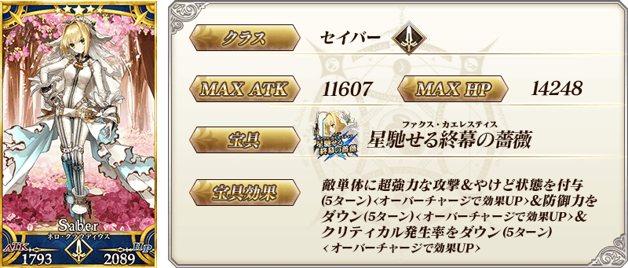
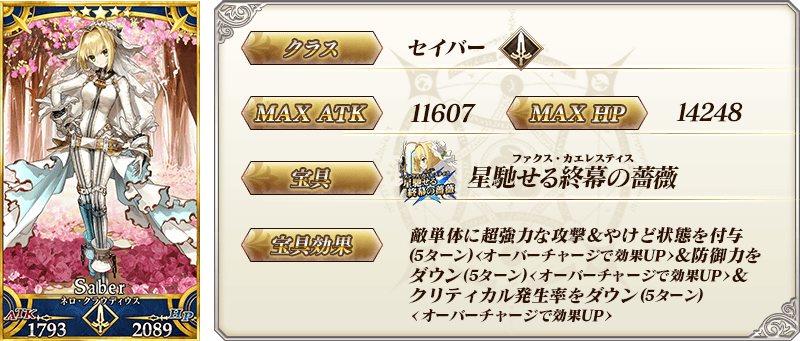
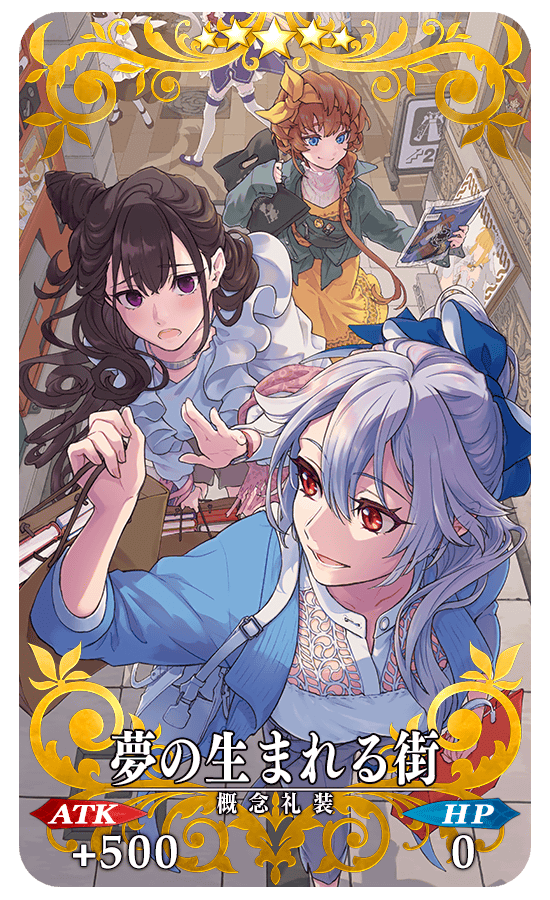
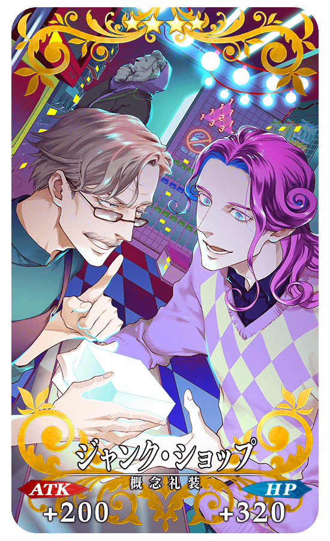
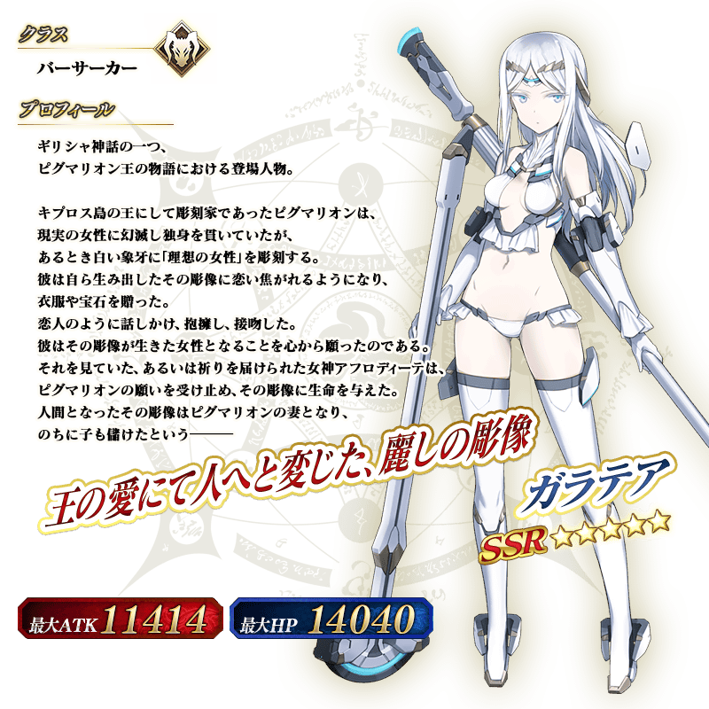
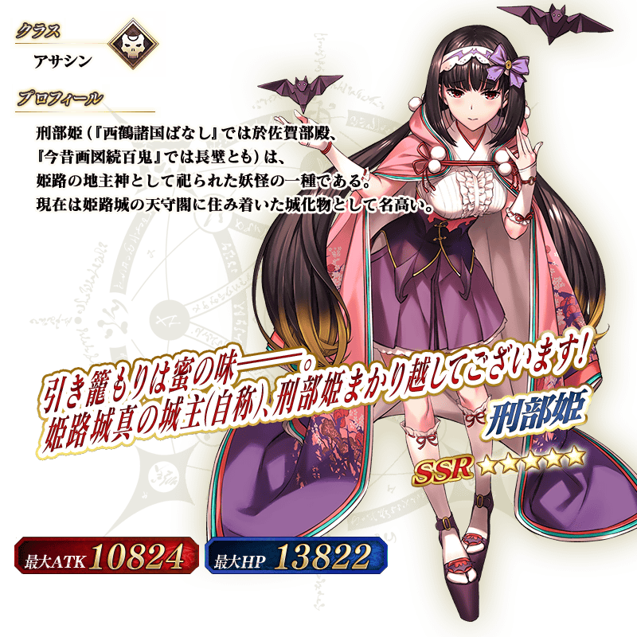

◆「Akihabara Explosion！Pick Up召喚(每日交替)」期間◆
期間:2021年3月24日(三) 17:00～4月7日(三) 11:59
舉辦期間限定「Akihabara Explosion！Pick Up召喚(每日交替)」！
本次從期間限定活動「Akihabara Explosion！ ～願望的街道與被刻上愛的雕像們～」關聯從者之中，包含1位新登場從者的下述從者Pick Up！
▼新登場從者
【每日交替Pick Up】
・★5(SSR)伽拉忒亞
▼期間限定從者
【每日交替Pick Up】
・★5(SSR)尼祿・克勞狄烏斯〔Bride〕
▼Pick Up從者
【每日交替Pick Up】
・★5(SSR)刑部姬(Assassin)
另外，下述的期間限定概念禮裝常駐Pick Up！
【常駐Pick Up】
・★5(SSR)夢の生まれる街
・★4(SR)ジャンク・ショップ
・★3(R)ハオ・チー？
裝備上述3種概念禮裝的話，在期間限定活動「Akihabara Explosion！ ～願望的街道與被刻上愛的雕像們～」中自身的攻擊威力會提升。
Pick Up期間中，Pick Up對象從者與概念禮裝的出現機率提升！
詳情請在聖晶石召喚畫面左下的召喚詳細確認。
11次召喚中確定1張★4(SR)以上和確定1位★3(R)以上的從者！ ※確定★4(SR)以上包含從者和概念禮裝。 ※本頁面皆為開發中圖片。會有與實際圖片相異的情況。
◆有關從者的注意◆
※請注意本召喚做為每日交替，下述的從者就算舉辦期間中也有不會被抽出來的日子。
・★5(SSR)伽拉忒亞
・★5(SSR)尼祿・克勞狄烏斯〔Bride〕
※下述的從者在Pick Up期間結束後不會追加到故事召喚。
・★5(SSR)尼祿・克勞狄烏斯〔Bride〕
※下述的從者自Pick Up期間結束後的2021年4月7日(三) 12:00，追加到故事召喚。
・★5(SSR)伽拉忒亞
※下述的從者在Pick Up期間結束後仍會在故事召喚被抽出。
・★5(SSR)刑部姬(Assassin)
◆有關概念禮裝的注意◆
※下述的概念禮裝在期間限定活動「Akihabara Explosion！ ～願望的街道與被刻上愛的雕像們～」中「自身的攻擊的威力提升」的效果，只限各稀有度以下的從者裝備時發動。
・★5(SSR)夢の生まれる街
只限★5(SSR)以下的從者裝備時發動
・★4(SR)ジャンク・ショップ
只限★4(SR)以下的從者裝備時發動
・★3(R)ハオ・チー？
只限★3(R)以下的從者裝備時發動
※只有「瑪琇・基利艾拉特」不受稀有度限制，無論裝備哪個概念禮裝的情況都會得到「自身的攻擊威力提升」的效果。
※下述的概念禮裝，Pick Up期間中也能靠友情點數召喚獲得。
・★3(R)ハオ・チー？
※在自動變還設定登錄★3(R)概念禮裝的情況，下述的概念禮裝會變成自動變還的對象。
・★3(R)ハオ・チー？
◆「Akihabara Explosion！Pick Up召喚(每日交替)」Pick Up內容◆
| Pick Up期間 | 每日交替Pick Up |
|---|---|
| 3/24(三) 17:00～ 3/26(五) 22:59 |
★5 伽拉忒亞 |
| 3/26(五) 23:00～3/27(六) 22:59 | ★5 伽拉忒亞 ★5 尼祿・克勞狄烏斯〔Bride〕 |
| 3/27(六) 23:00～3/28(日) 22:59 | ★5 尼祿・克勞狄烏斯〔Bride〕 |
| 3/28(日) 23:00～3/29(一) 22:59 | ★5 伽拉忒亞 |
| 3/29(一) 23:00～3/30(二) 22:59 | ★5 伽拉忒亞 ★5 刑部姬(Assassin) |
| 3/30(二) 23:00～3/31(三) 22:59 | ★5 刑部姬(Assassin) |
| 3/31(三) 23:00～4/1(四) 22:59 | ★5 伽拉忒亞 |
| 4/1(四) 23:00～4/2(五) 22:59 | ★5 伽拉忒亞 ★5 尼祿・克勞狄烏斯〔Bride〕 |
| 4/2(五) 23:00～4/3(六) 22:59 | ★5 尼祿・克勞狄烏斯〔Bride〕 |
| 4/3(六) 23:00～4/4(日) 22:59 | ★5 伽拉忒亞 |
| 4/4(日) 23:00～4/5(一) 22:59 | ★5 伽拉忒亞 ★5 刑部姬(Assassin) |
| 4/5(一) 23:00～4/6(二) 22:59 | ★5 刑部姬(Assassin) |
| 4/6(二) 23:00～4/7(三) 11:59 | ★5 伽拉忒亞 |
※請注意會以每日交替變更Pick Up的從者。

 ※上述「★5(SSR)伽拉忒亞」的卡面為靈基再臨第2階段。
※上述「★5(SSR)伽拉忒亞」的卡面為靈基再臨第2階段。
 


 ※上述「★5(SSR)刑部姬(Assassin)」的卡面為靈基再臨第2階段。
※上述「★5(SSR)刑部姬(Assassin)」的卡面為靈基再臨第2階段。
|  |
★★★★★SSR |
|  |
★★★★SR |
|
★★★R |
 ※上述「★5(SSR)伽拉忒亞」的立繪為靈基再臨第2階段。

 ※上述「★5(SSR)刑部姬(Assassin)」的立繪為靈基再臨第2階段。
【3月24日(三) 17:00追記】
介紹「★5(SSR)伽拉忒亞」的寶具演出！
「★5(SSR)伽拉忒亞」的寶具演出於一部份裝置有對應全螢幕顯示。
在「Fate/Grand Order」官方網站內的公告中，以影片公開寶具演出，敬請確認。
【3月24日(三) 17:00追記】
介紹在本召喚Pick Up的2位從者寶具演出！
在「Fate/Grand Order」官方網站內的公告中，以影片公開寶具演出，敬請確認。
【★5(SSR)尼祿・克勞狄烏斯〔Bride〕】
【★5(SSR)刑部姬(Assassin)】

【3月24日(三) 17:00追記】
強化「★5(SSR)尼祿・克勞狄烏斯〔Bride〕」的特別關卡「從者強化關卡」，在迦勒底之門永久追加。
不僅進行對象從者的強化，也可獲得聖晶石做為關卡通過報酬。
※請注意在從者強化關卡沒有文字冒險部份。
◆追加時間◆
2021年3月24日(三) 17:00～
◆開放條件◆
持有的強化對象從者，必須使其最終再臨。
※未持有對象從者的話，不會出現關卡。
※關卡沒有舉辦期限。

其他還有，期間限定活動「Akihabara Explosion！ ～願望的街道與被刻上愛的雕像們～」同時舉辦！
關於詳情，請自下述橫幅確認。
※3月24日(三) 17:00修正
■「Akihabara Explosion！ ～願望的街道與被刻上愛的雕像們～」詳細情報